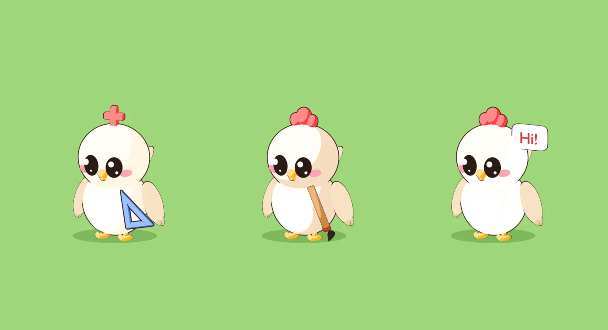
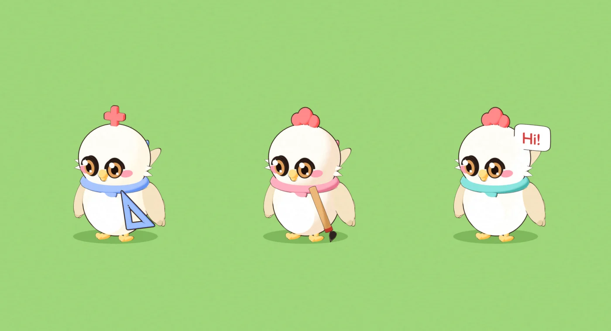
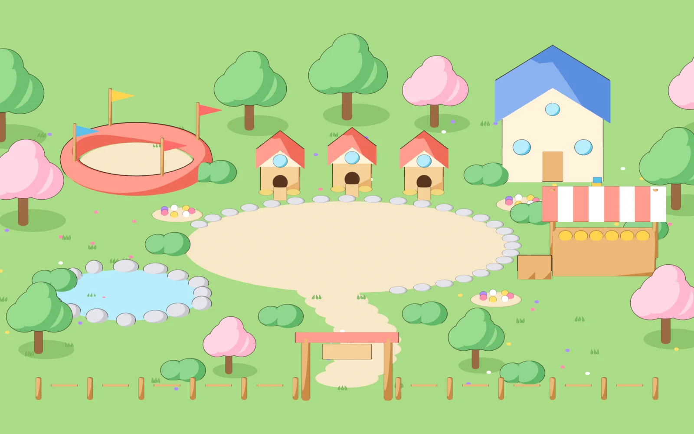
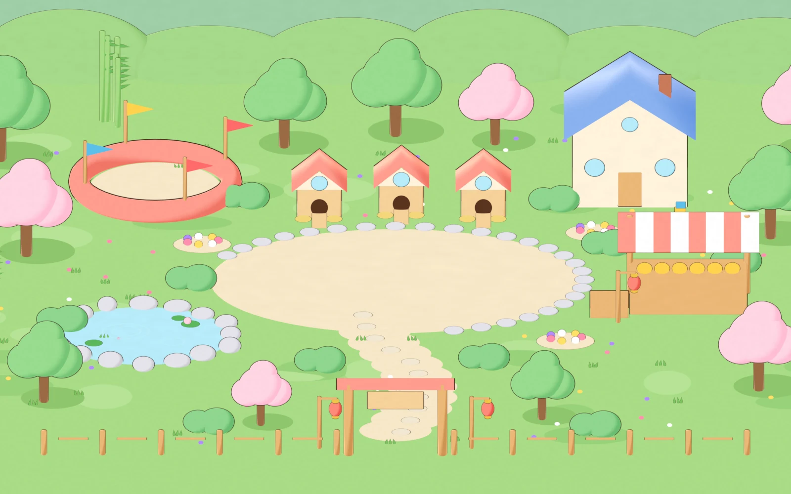
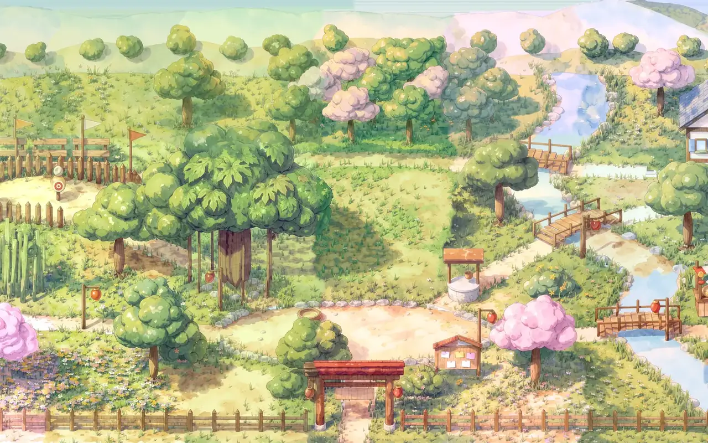
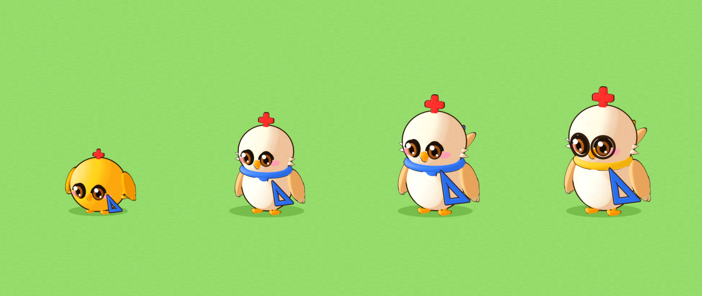
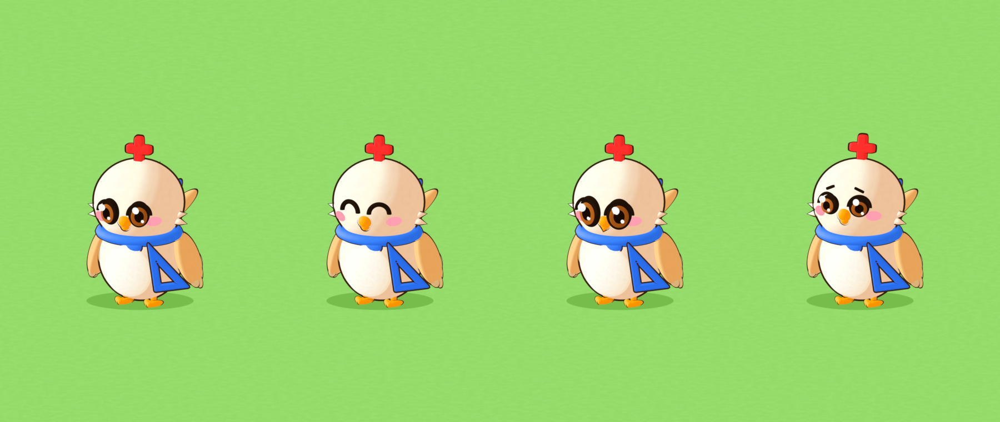
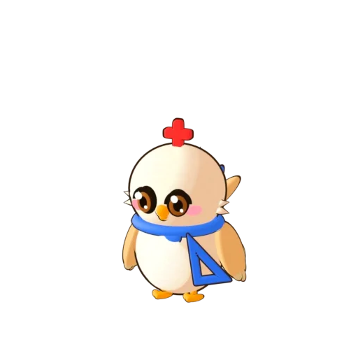

Đàn gà
Một thân gà chung cho mọi môn; mỗi môn đổi mào, món đồ cầm và màu khăn. Gà Toán dùng làm mẫu cho giai đoạn và nét mặt.
Cả đàn
Mỗi môn một chú gà: mào, món đồ cầm và màu khăn riêng. Bấm để gà nhảy. Gà Toán, Văn, Anh tạm giữ một dáng.
Trước / sau lượt chi tiết
Tô bóng mềm như tô màu, viền sáng ấm; mắt có tròng và mi; khăn quàng theo màu môn; túm lông má; cánh nhiều lớp. Làng: đồi núi phía xa, tre, đèn lồng, đá lát đường, sen trên hồ, cỏ đậm nhạt.





4 giai đoạn lớn

Gà conGà choaiTrưởng thànhCao thủ
Nét mặt

Bình thườngVui (em làm đúng)Ngạc nhiênBuồn (em nghỉ học lâu)

Lv 7Gà ToánChuyển động
- Đứng yên: thở, nghiêng đầu, khẽ vỗ cánh, thỉnh thoảng chớp mắt.
- Nhảy mừng: lấy đà, bật lên vỗ cánh, mặt cười, đáp xuống nhún. Dùng khi em làm đúng hoặc gà lên cấp.
- Mỗi đoạn 24 khung hình, khoảng 190 KB.